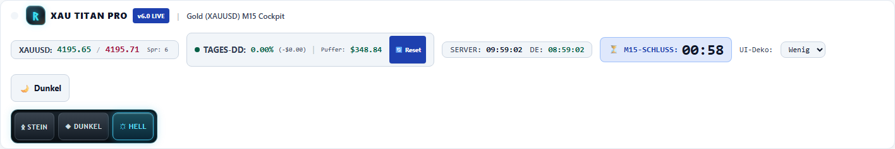
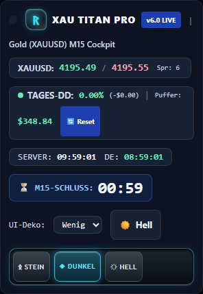
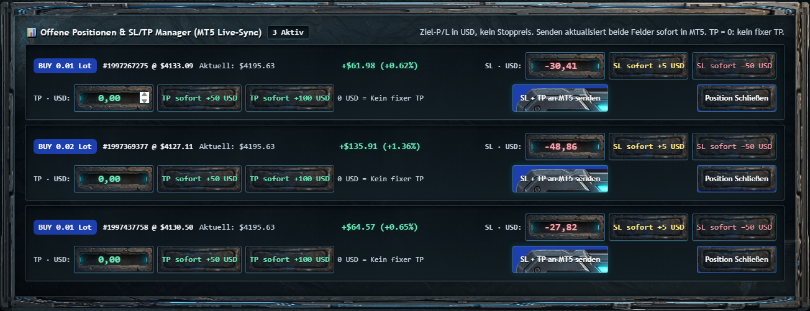
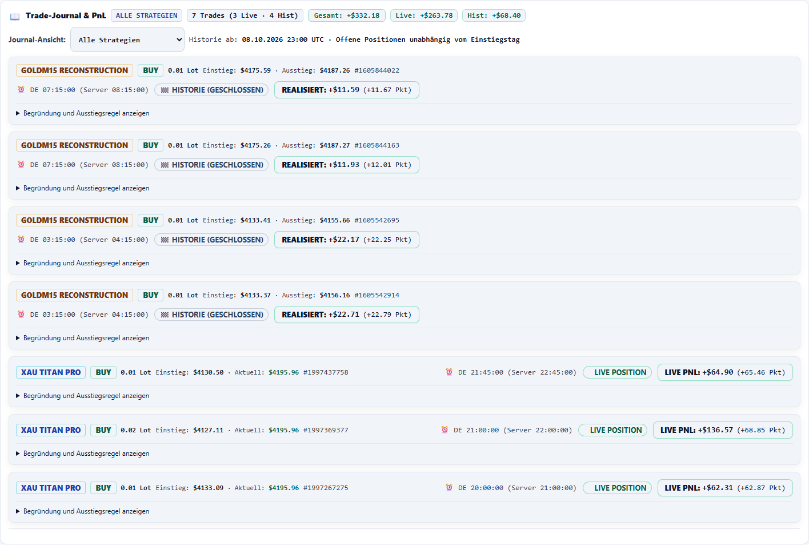

| Bereich | Umsetzung |
|---|---|
| Kontrast/Responsive | Semantische Farben, sichtbarer Countdown, Header-Reflow320px, Matrixscroll und klare SL/TP-Felder. |
| Frische/Wiederanlauf | 4,5s Requestdeadline, Status- und Quellalter, Stale-/Offlinezustand, Bootstrap-Recovery, keine Mutation-Retries. |
| Eingaben/Modal | Fokus-/Entwürfe bei Strukturänderung, Quickaction-Rennen, aktuelle Entry-Werte, dialogrole/Fokus/Escape und live Read-only-Werte. |
| Schreibsicherheit | Finite Validierung, Pflichtkonto, XAUUSD-Scope, Stop-/Tick-/Freezeprüfung, TP0 explizit entfernen, per-file atomare Persistenz mit Fehler/Readback. |
| Konten/Journal | Globaler MT5-Lock beibehalten, Quelle und Zielidentität geprüft, echte FIFO-Kosten, unbekannte Gründe/Zuordnungen statt erfundener Zahlen. |
| Brokerzeit | Explizit benutzerbestätigtesUTC+3 pro Konto, strikte30s/5s Altersgrenzen. Bei Brokerzeitwechsel wieder gesperrt statt Offset automatisch zu erraten. |
| Performance | LightStatus ohne redundante Journale, bounded geschlossen-bar Cache. Nicht-Chart-Deko19.665.638→3.093.164Byte; Original Chartassets bleiben unangetastet. |
| Betrieb/CI | Gepinnte direkte/transitive WindowsPython3.14-Umgebung, pytestTestpfad, brokerfreie Browsergates; Originalkonfliktcheckout geschützt. |
12Samples pro Konto/Payload, echte GETs. Keine SLA/Internet-/VPS-Abnahme und kein kontrollierter Vorher/NachherSpeedup: Brokerlast/Positionen unterscheiden sich.
| Konto | Journal enthalten | Median ms | Max ms |
|---|---|---|---|
| titan | False | 45.37 | 85.83 |
| titan | True | 53.41 | 66.95 |
| goldm15 | False | 61.81 | 82.01 |
| goldm15 | True | 63.08 | 75.01 |



